Evan and I had planned to tackle Mount Goode as soon as weather and schedules allowed. The main goal of the trip was the ridiculously awesome summit bivy with 360-degree panorama. I was also excited to tick off another peak on the Bulger list and was fresh off of defending my PhD and was ready to embrace a summer of dirtbaggery.
The NE ridge of Mount Goode is one of the most picturesque moderate long alpine routes in the North Cascades. The route is a 2500-foot ridge that erupts from a glacier sitting above a steamy vegetated valley, and continues uninterrupted to the summit of the 11th tallest summit in Washington. But boy do you have to earn it. This is one of those trips that requires the “full” toolbox and is also fairly remote. This is, of course, only possible because of the incredible backcountry trail network in the North Cascades that allows for the 15+-mile approach to be done in a day.
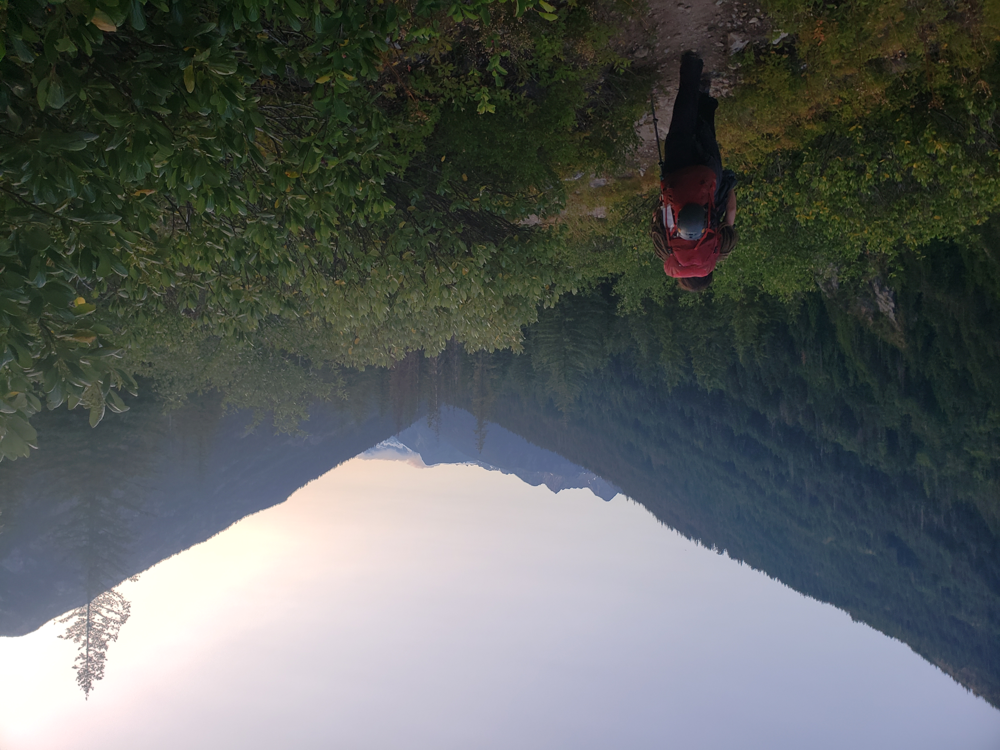
Despite getting out fairly early, we were stuck in the Marblemount Permit Shuffle for a few hours and didn’t hit the trail until mid afternoon. We hustled down the trail and made it a solid 15 miles before darkness forced us to find a bivy site. We got up early and packed up. Evan wandered off to do his morning business, and a bear wandered through between Evan and camp. I shouted a warning, which he didn’t hear; he didn’t even realize there had been a bear, but it would have been hilarious for a bear to stumble upon him with his pants around his ankles.
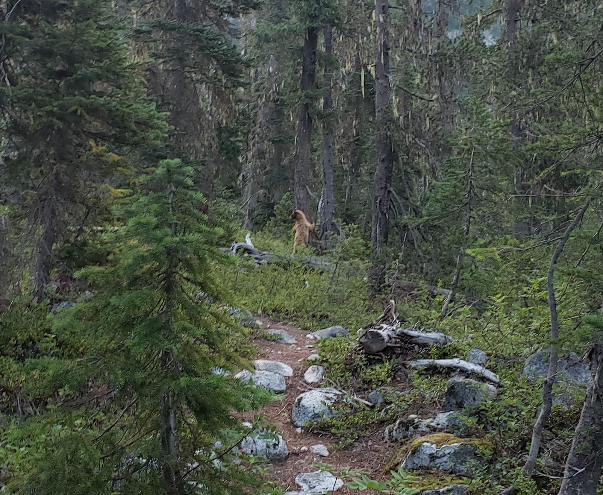
The trail became progressively worse, as we followed a faint path through 10 foot high brush that was so thick you couldn’t see the leader.
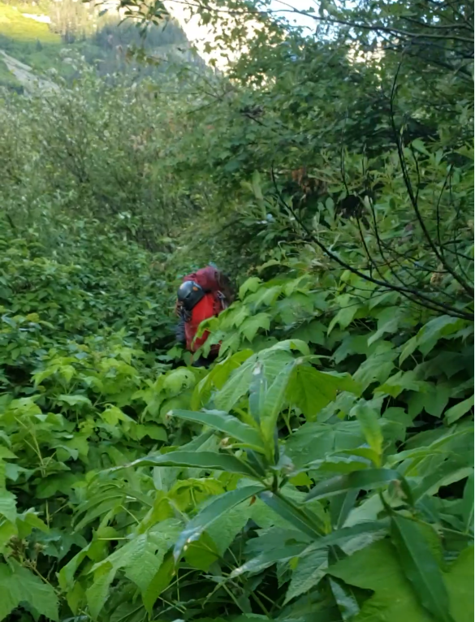
Eventually the trail vanished (the trail nominally dead ends a few miles past the last camp in the cirque below Mount Logan and there is no discernible reason a casual backpacker would go there, so it gets pretty overgrown), and we hooked a left to cross the river and head up towards the glacier. We fought our way uphill, the forest yielding to rock, and then slabs, and then finally glacier.
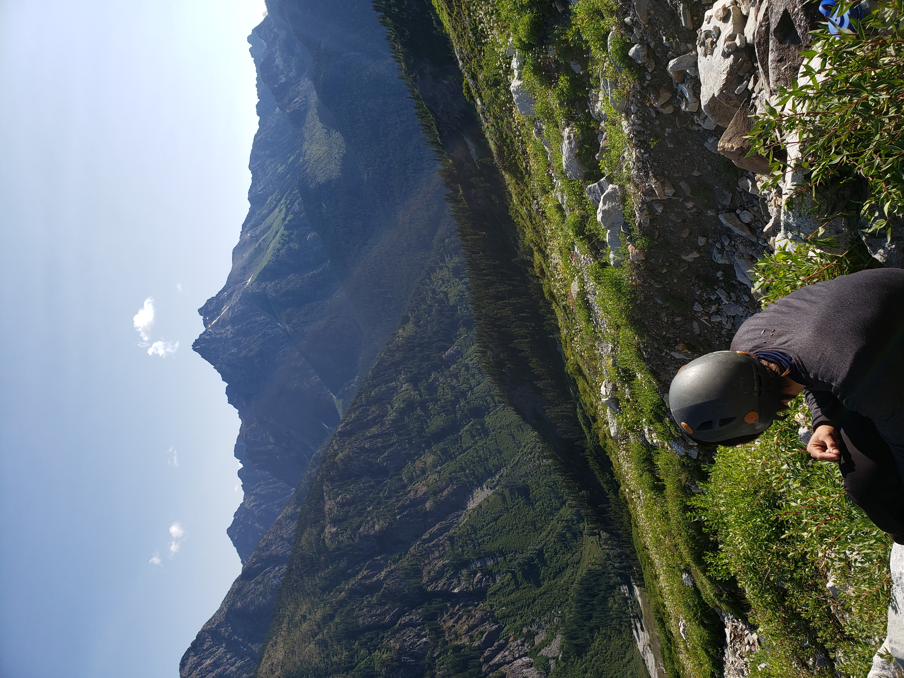
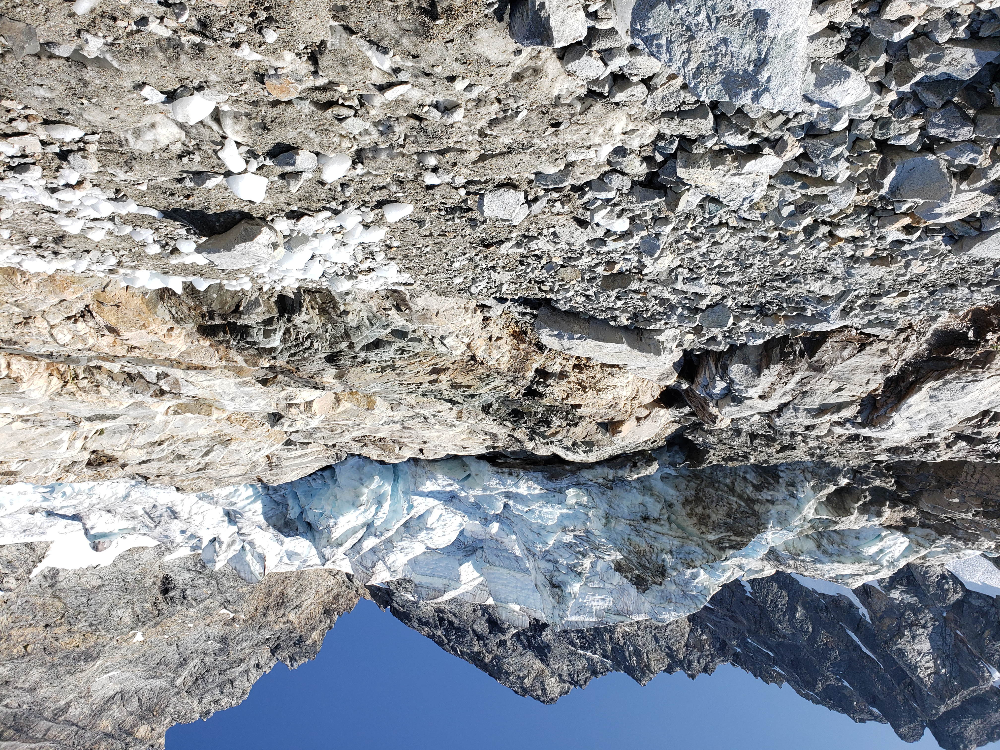
Mounting the glacier required a short 10 foot AI2 move, which was spicy with only crampons and ice axe. The glacier was deeply crevassed, but the route was actually quite direct. In some years parties report trouble transitioning from the glacier to the rock, but we found a tenuous but solid snow bridge that served nicely.
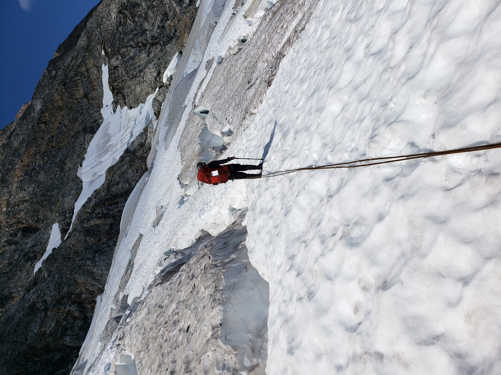
The crux of the climb was gaining the ridge. The start of the climb varies year to year based on the best access point from the glacier. While we had a relatively easy glacier dismount, it took a couple of pitches up to 5.8 before we were on the ridge proper. The ridge was incredible. We encountered difficulties up to 5.7, but there are many options.
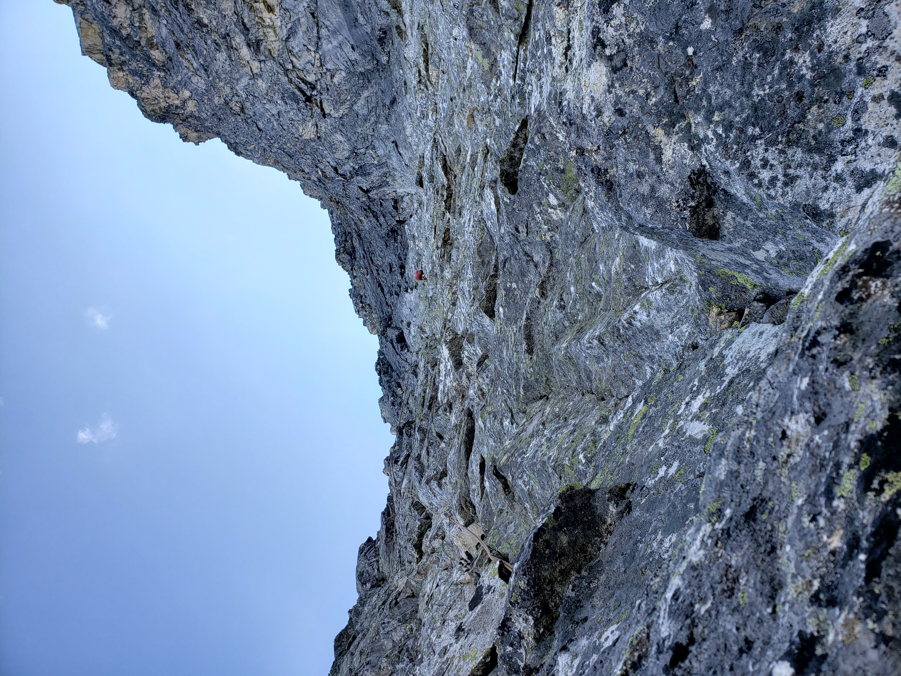
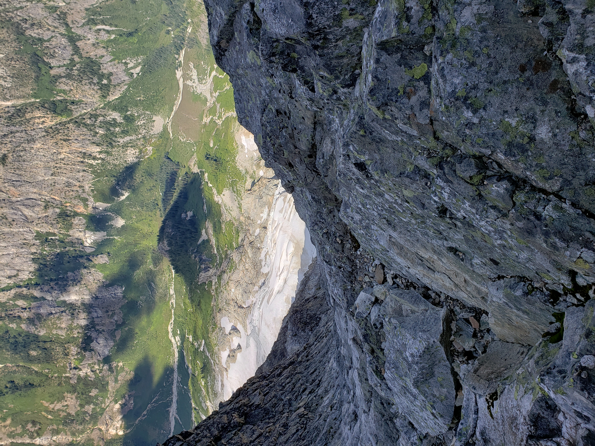
We simul-climbed most of it, topping out in the mid afternoon. Incredibly, we were the first to arrive, and claimed the throne at the very summit. A rock ring, just big enough for a single tent, crowns the top of the mountain. A few smaller, less exposed bivy sites dot the sides somewhat below, but it is clear which site is the real prize. We encountered two other parties, one had done the scramble route and was descending on the same day, while the other party opted to sleep a bit lower.
The scenery was incredible—uninterrupted views of the ridge down 6000 feet to the jungle where we had started our day. 360-degree views of the rugged North Cascades. I snapped picture after picture as the sky lit up at sunset.
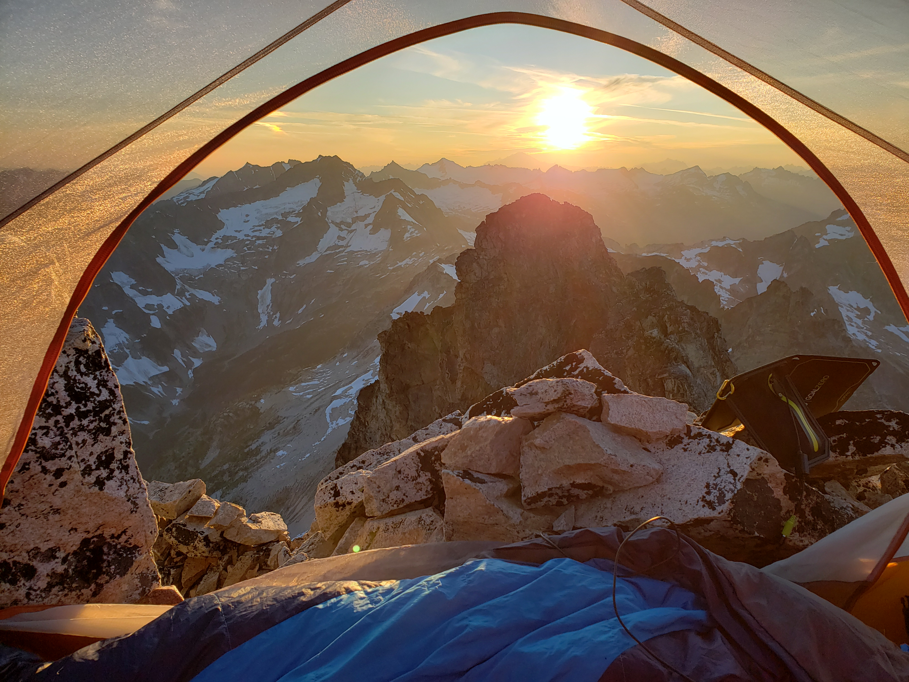
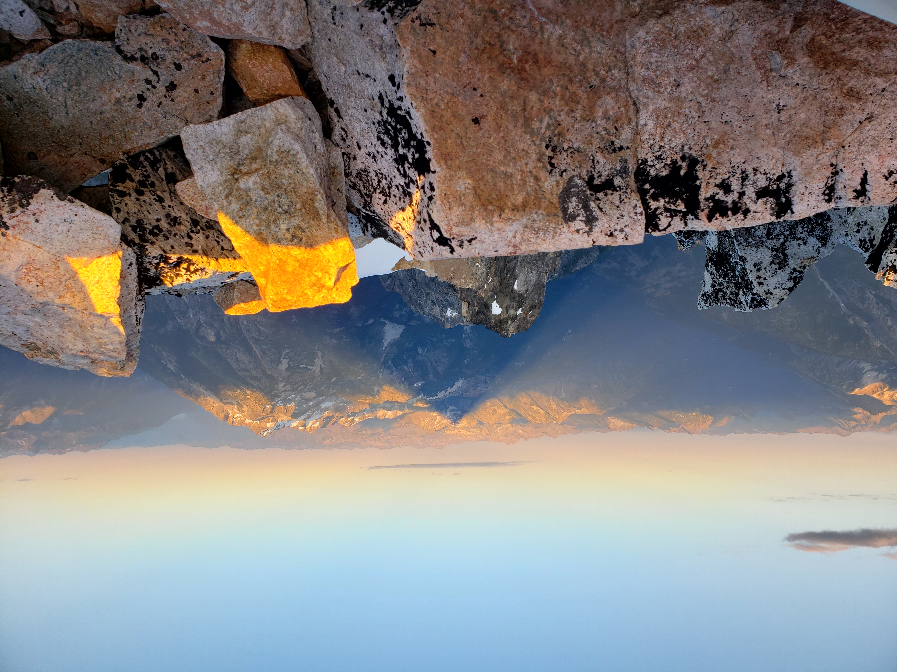
The next day we descended via the scramble route, which was surprisingly exposed to access from the summit, and dropped down.
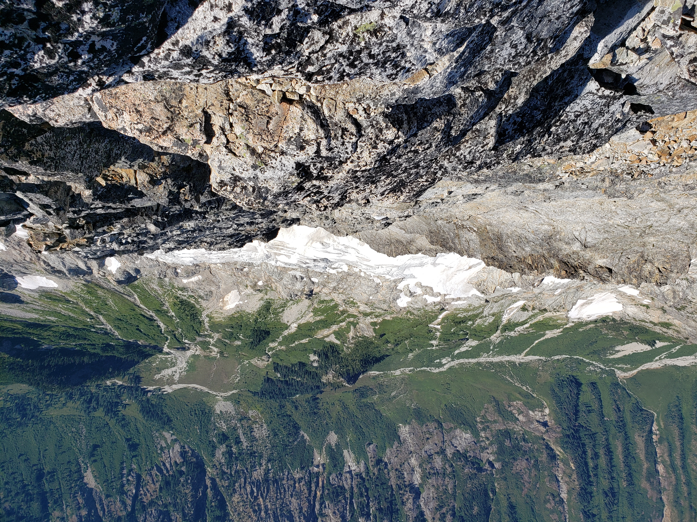
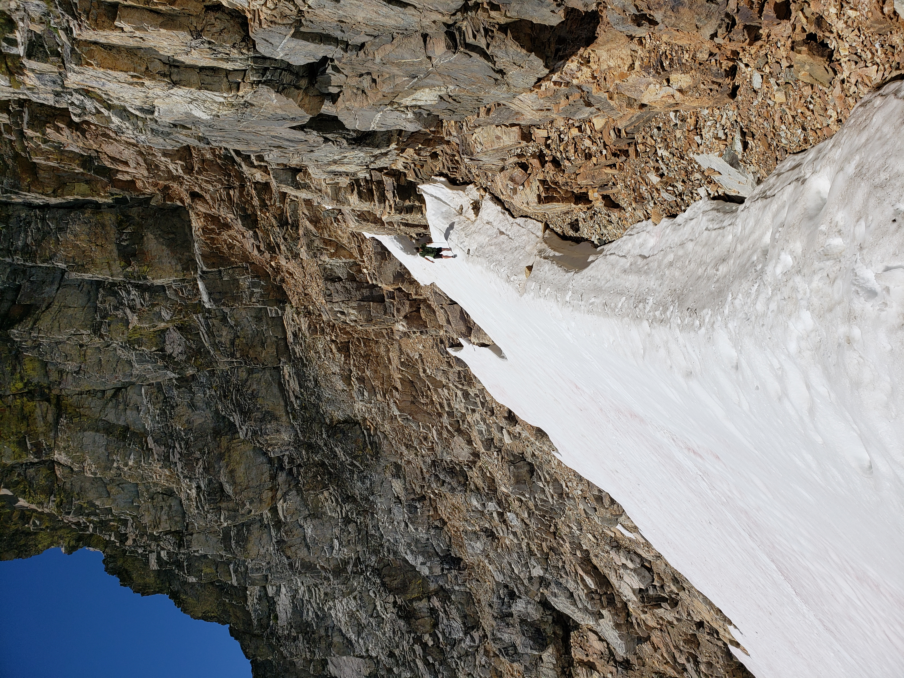
We dropped our packs at a convenient spot and traversed over to tag Storm King. The scramble route on Storm King involves a thought-provoking traverse in a cliff weakness with a ceiling that forces you to undercling with your butt over the void. Spooky! The summit block is a tough scramble, but with minimal exposure. The real treat of the summit was an in-your-face view of the Northeast Ridge.
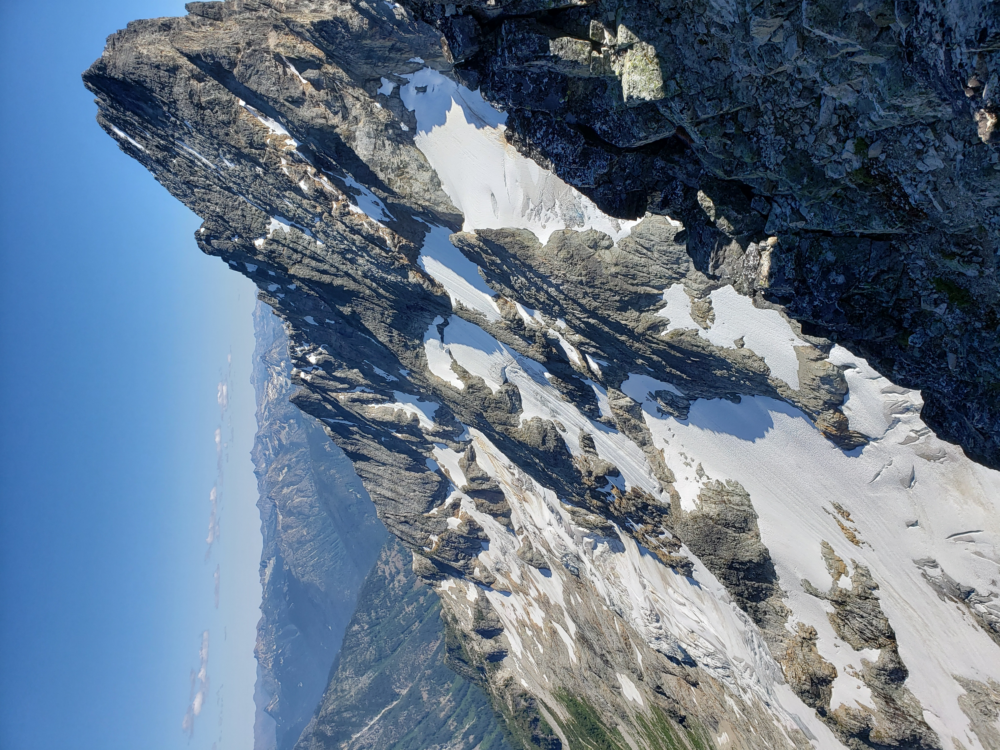
We jammed back over to our packs and started the long journey back out. Evan was suffering from a variety of maladies and injuries, and so we cut the day short to let him rest and recover.
The 4th day was an absolute slog, but at least it was a trail slog. We took the Park Creek Trail to the Stehekin Valley Trail, and finally the PCT back to the Bridge Creek Trailhead. The PCT section is all uphill-- it's not steep, but it really grates on you when you're just trying to get out and go home.